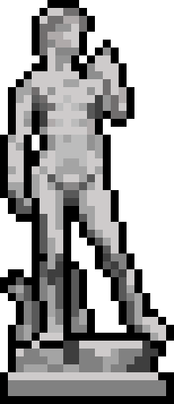

project / 01 / active build
Merlin.
Merlin will be an AI assistant meant to be used as a tool and aid in research as well as instruction. Taking AI from replacing, and back to assisting.
statusin development

project / 01 / active build
Merlin will be an AI assistant meant to be used as a tool and aid in research as well as instruction. Taking AI from replacing, and back to assisting.
